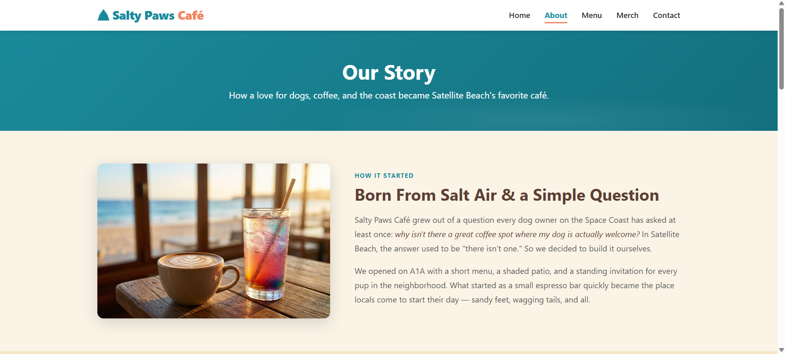

Case Study
Salty Paws Cafe
A dog-friendly beach cafe concept designed to create a welcoming space for both customers and their pets, combining branding, UX, and visual design.
Overview
Salty Paws Cafe is a concept for a dog-friendly beach cafe located in a coastal area. The goal was to design a website that reflects the brand’s personality while making key information easy to access for customers.
Problem
Many cafe websites lack clear structure and do not effectively highlight key information such as menus, location, and hours. For a dog-friendly cafe, it’s also important to communicate the unique experience and atmosphere.
Users
- Beachgoers looking for a casual cafe experience
- Dog owners seeking pet-friendly spaces
- Tourists needing quick access to menu and location info
Design Goals
- Create a warm, inviting brand identity
- Highlight the dog-friendly aspect clearly
- Make menu and location easy to find
- Design a responsive, mobile-friendly layout
Brand Direction
The visual design focuses on a playful, beach-inspired aesthetic with warm colors, soft shapes, and friendly typography. The goal was to create a relaxed and welcoming feel that reflects both the coastal setting and the pet-friendly atmosphere.
Final UI

The final interface uses clear hierarchy, strong typography, and consistent spacing to guide users through the site while maintaining a cohesive brand identity.
Outcome
The design creates a clear and engaging experience that highlights the cafe’s unique identity while making important information easy to access.
Reflection
If I continued this project, I would conduct user testing and refine the navigation and content hierarchy based on real user behavior.